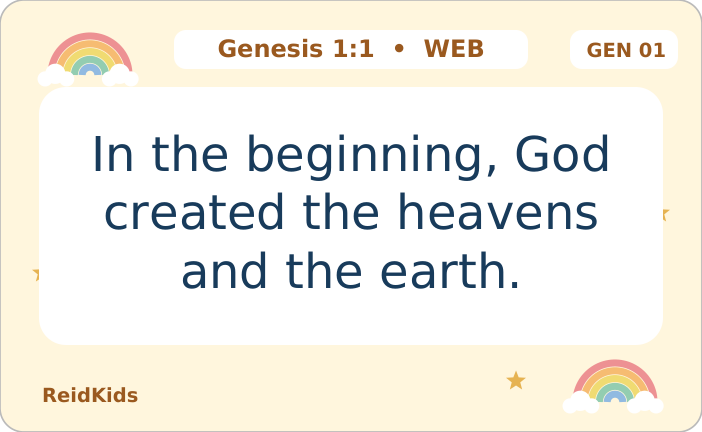
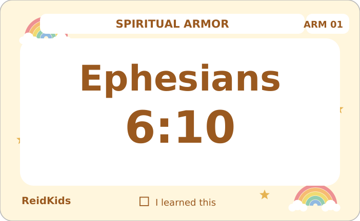
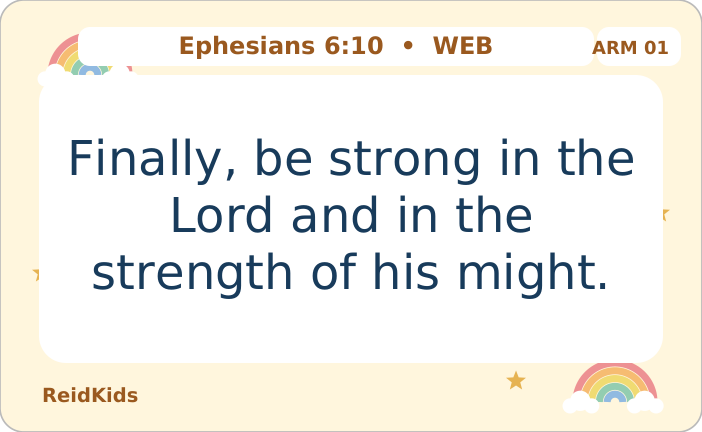
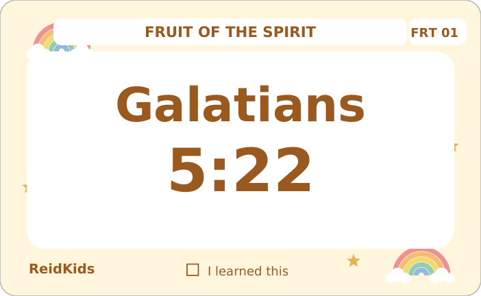
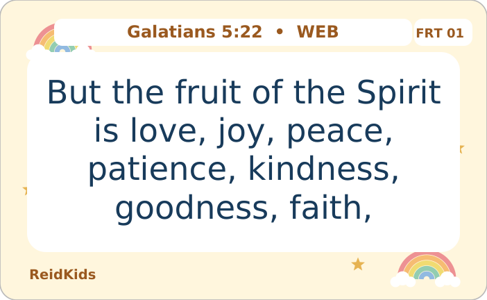
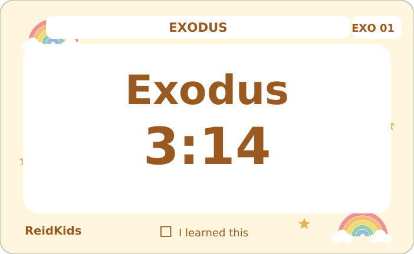
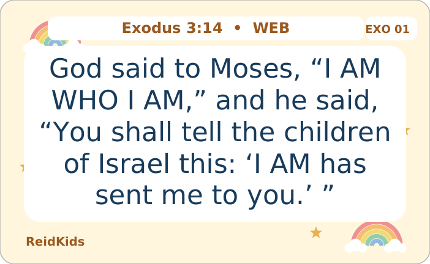

FREE BIBLE PRINTABLES
Little cards.
Lifelong truth.
A small way to carry God’s Word into everyday life. Print a set, learn together, and tuck a little encouragement into the day.
Choose your verse cardsFree PDFs · No sign-up · Made for families
1 · CHOOSE A COLLECTION
Find your next verse.
Choose a book or a theme, then pick a design. Every collection has eight pocket cards and its own parent guide.
BOOKS · GENESIS
Start at the beginning.
Creation, trust, and God’s promises. The same eight verses in every design, with a reference on the front and the full verse on the back.

A closer look at card 01. Each download includes all eight cards.
2 · PICK A DESIGN
Rainbows
A little color for every day.
Every design is for every child. Pick a favorite.
Download Rainbows PDFReidKids_Genesis_Rainbows_Cards.pdf
First time? Read the print tips below.
All Genesis downloads
- Rainbows cards 2-page PDF ↓ReidKids_Genesis_Rainbows_Cards.pdf
- Moon and Stars cards 2-page PDF ↓ReidKids_Genesis_Moon_and_Stars_Cards.pdf
- Dolphins cards 2-page PDF ↓ReidKids_Genesis_Dolphins_Cards.pdf
- Unicorns cards 2-page PDF ↓ReidKids_Genesis_Unicorns_Cards.pdf
- Camouflage cards 2-page PDF ↓ReidKids_Genesis_Camouflage_Cards.pdf
- Ink-saving cards 2-page PDF ↓ReidKids_Genesis_Ink_Saving_Cards.pdf
- All five color designs 10-page PDF ↓ReidKids_Genesis_Color_Cards.pdf
The combined PDF includes five color designs, two pages per design. Print just your favorite pair, or use its separate PDF above. Every design repeats the same eight verses.
Which eight verses are included?
- Genesis 1:1 God creates
- Genesis 1:3 God gives light
- Genesis 1:27 Made in God’s image
- Genesis 2:3 A day made holy
- Genesis 6:8 Noah finds favor
- Genesis 9:13 A sign of God’s promise
- Genesis 15:6 Abram trusts God
- Genesis 50:20 God works for good
These are complete, unabridged verses from the World English Bible Classic, a public-domain translation. “Yahweh” is God’s name, often shown as “LORD” in other translations. The parent guide includes short discussion prompts and the surrounding passages to read together.
Genesis 50:20 describes God bringing good from Joseph’s suffering. It does not excuse harm or ask a child to remain unsafe. Encourage children to tell a trusted adult if someone hurts them.
Designs are decorative themes, not illustrations of the Bible passages.
Print & learn: Genesis
Download the complete 6-page print guide ↓Includes instructions, holder, a deliberate blank page, and the two-page alignment test.ReidKids_Genesis_Print_Guide.pdf
THEMES · SPIRITUAL ARMOR
Stand strong in God’s love.
Eight complete verses from Ephesians 6 help children remember God's strength, truth, peace, faith, salvation, word, and prayer.


A closer look at card 01. Each download includes all eight cards.
2 · PICK A DESIGN
Rainbows
A little color for every day.
Every design is for every child. Pick a favorite.
Download Rainbows PDFReidKids_Spiritual_Armor_Rainbows_Cards.pdf
First time? Read the print tips below.
All Spiritual Armor downloads
- Rainbows cards 2-page PDF ↓ReidKids_Spiritual_Armor_Rainbows_Cards.pdf
- Moon and Stars cards 2-page PDF ↓ReidKids_Spiritual_Armor_Moon_and_Stars_Cards.pdf
- Dolphins cards 2-page PDF ↓ReidKids_Spiritual_Armor_Dolphins_Cards.pdf
- Unicorns cards 2-page PDF ↓ReidKids_Spiritual_Armor_Unicorns_Cards.pdf
- Camouflage cards 2-page PDF ↓ReidKids_Spiritual_Armor_Camouflage_Cards.pdf
- Ink-saving cards 2-page PDF ↓ReidKids_Spiritual_Armor_Ink_Saving_Cards.pdf
- All five color designs 10-page PDF ↓ReidKids_Spiritual_Armor_Color_Cards.pdf
The combined PDF includes five color designs, two pages per design. Print just your favorite pair, or use its separate PDF above. Every design repeats the same eight verses.
Which eight verses are included?
- Ephesians 6:10 Strength in the Lord
- Ephesians 6:11 The whole armor
- Ephesians 6:13 Stand firm
- Ephesians 6:14 Truth and righteousness
- Ephesians 6:15 Ready for peace
- Ephesians 6:16 The shield of faith
- Ephesians 6:17 Salvation and God's word
- Ephesians 6:18 Keep praying
These are complete, unabridged verses from the World English Bible Classic, a public-domain translation. “Yahweh” is God’s name, often shown as “LORD” in other translations. The parent guide includes short discussion prompts and the surrounding passages to read together.
Read Ephesians 6:10–18 together. God’s armor is a picture of spiritual faithfulness, never a reason to fight people.
Designs are decorative themes, not illustrations of the Bible passages.
Print & learn: Spiritual Armor
Download the complete 8-page print guide ↓Includes three parent-guide pages, the holder, two deliberate blank pages, and the two-page alignment test.ReidKids_Spiritual_Armor_Print_Guide.pdf
THEMES · FRUIT OF THE SPIRIT
Grow in love, day by day.
Eight complete verses help families learn all nine qualities of the fruit of the Spirit and practice love in daily life.


A closer look at card 01. Each download includes all eight cards.
2 · PICK A DESIGN
Rainbows
A little color for every day.
Every design is for every child. Pick a favorite.
Download Rainbows PDFReidKids_Fruit_of_the_Spirit_Rainbows_Cards.pdf
First time? Read the print tips below.
All Fruit of the Spirit downloads
- Rainbows cards 2-page PDF ↓ReidKids_Fruit_of_the_Spirit_Rainbows_Cards.pdf
- Moon and Stars cards 2-page PDF ↓ReidKids_Fruit_of_the_Spirit_Moon_and_Stars_Cards.pdf
- Dolphins cards 2-page PDF ↓ReidKids_Fruit_of_the_Spirit_Dolphins_Cards.pdf
- Unicorns cards 2-page PDF ↓ReidKids_Fruit_of_the_Spirit_Unicorns_Cards.pdf
- Camouflage cards 2-page PDF ↓ReidKids_Fruit_of_the_Spirit_Camouflage_Cards.pdf
- Ink-saving cards 2-page PDF ↓ReidKids_Fruit_of_the_Spirit_Ink_Saving_Cards.pdf
- All five color designs 10-page PDF ↓ReidKids_Fruit_of_the_Spirit_Color_Cards.pdf
The combined PDF includes five color designs, two pages per design. Print just your favorite pair, or use its separate PDF above. Every design repeats the same eight verses.
Which eight verses are included?
- Galatians 5:22 The Spirit's fruit
- Galatians 5:23 Gentleness and self-control
- Galatians 5:25 Walk by the Spirit
- John 15:5 Stay close to Jesus
- John 15:9 Remain in Jesus' love
- Romans 15:13 Joy, peace, and hope
- Ephesians 4:32 Kind and tender hearted
- 2 Timothy 1:7 Power, love, self-control
These are complete, unabridged verses from the World English Bible Classic, a public-domain translation. “Yahweh” is God’s name, often shown as “LORD” in other translations. The parent guide includes short discussion prompts and the surrounding passages to read together.
Read cards 1 and 2 together: Galatians 5:22–23 includes all nine qualities. WEB Classic uses “faith,” with the footnote “or, faithfulness.”
Designs are decorative themes, not illustrations of the Bible passages.
Print & learn: Fruit of the Spirit
Download the complete 8-page print guide ↓Includes three parent-guide pages, the holder, two deliberate blank pages, and the two-page alignment test.ReidKids_Fruit_of_the_Spirit_Print_Guide.pdf
BOOKS · EXODUS
A journey of faith.
Eight selected Exodus verses introduce God's call to Moses, Israel's rescue, worship, covenant, and daily faithfulness.


A closer look at card 01. Each download includes all eight cards.
2 · PICK A DESIGN
Rainbows
A little color for every day.
Every design is for every child. Pick a favorite.
Download Rainbows PDFReidKids_Exodus_Rainbows_Cards.pdf
First time? Read the print tips below.
All Exodus downloads
- Rainbows cards 2-page PDF ↓ReidKids_Exodus_Rainbows_Cards.pdf
- Moon and Stars cards 2-page PDF ↓ReidKids_Exodus_Moon_and_Stars_Cards.pdf
- Dolphins cards 2-page PDF ↓ReidKids_Exodus_Dolphins_Cards.pdf
- Unicorns cards 2-page PDF ↓ReidKids_Exodus_Unicorns_Cards.pdf
- Camouflage cards 2-page PDF ↓ReidKids_Exodus_Camouflage_Cards.pdf
- Ink-saving cards 2-page PDF ↓ReidKids_Exodus_Ink_Saving_Cards.pdf
- All five color designs 10-page PDF ↓ReidKids_Exodus_Color_Cards.pdf
The combined PDF includes five color designs, two pages per design. Print just your favorite pair, or use its separate PDF above. Every design repeats the same eight verses.
Which eight verses are included?
- Exodus 3:14 God reveals his name
- Exodus 14:14 God rescues Israel
- Exodus 15:2 Strength and song
- Exodus 19:5 God's covenant with Israel
- Exodus 20:3 Worship God alone
- Exodus 20:12 Honor father and mother
- Exodus 20:15 Respect what belongs to others
- Exodus 20:16 Speak truth about others
These are complete, unabridged verses from the World English Bible Classic, a public-domain translation. “Yahweh” is God’s name, often shown as “LORD” in other translations. The parent guide includes short discussion prompts and the surrounding passages to read together.
Eight selected memory verses from Exodus, not a complete Ten Commandments set.
Designs are decorative themes, not illustrations of the Bible passages.
Print & learn: Exodus
Download the complete 8-page print guide ↓Includes three parent-guide pages, the holder, two deliberate blank pages, and the two-page alignment test.ReidKids_Exodus_Print_Guide.pdf
A LITTLE PREP. A LOT OF LEARNING.
From printer to pocket.
Start with plain paper. A quick test can save your good cardstock.
Download a PDF first, then print it from your PDF viewer. Printing this webpage will not print the cards.
Check the settings
US Letter, portrait, Actual size / 100%. Turn off “Fit,” booklet mode, and multiple pages per sheet.
Test both sides
Print the alignment test two-sided, flip on long edge. Hold it to the light and match the numbers. Printer alignment can vary.
Cut, learn, carry
Print your chosen two-page set. Cut at the corner marks. Read one verse together, then try it from the reference.
What if my printer doesn’t print on both sides?
Print the two pages separately at 100%. Cut out the fronts and backs, match the card number and verse reference, then glue each matching pair back to back with the top edges aligned. Let the glue dry completely. Manual refeeding varies by printer, so test on plain paper first.
Can I laminate the cards?
Yes. Cut the paper cards first. Use a pouch approved for your laminator, with at least ¼ inch between cards and ⅛ inch of clear space around every paper edge, or more if the manufacturer requires it. Laminate, cool, then trim while leaving at least ⅛ inch of sealed clear film around each card. Never cut through the seal.
A grown-up should handle the laminator, trimmer, and sharp scissors. Round sharp plastic corners without opening the seal. Keep cards and loose fasteners away from babies and children who put objects in their mouths.
Will the holder fit my cards?
The template is designed for this set, including a small lamination border. Test-fold it around your finished stack before using your best cardstock. Cardstock thickness, lamination, printer scaling, and folding can affect fit. Physical printer alignment and holder assembly have not been tested.
How can we use these as a family?
Start with one verse. Read it in its surrounding story, talk about it, then turn the card over and try saying it from the reference. Revisit it tomorrow. The parent guide offers a short conversation prompt for each card.
One little verse.
A moment together.
At breakfast, on the way to school, or before bed.
Make a little room for God’s Word today.